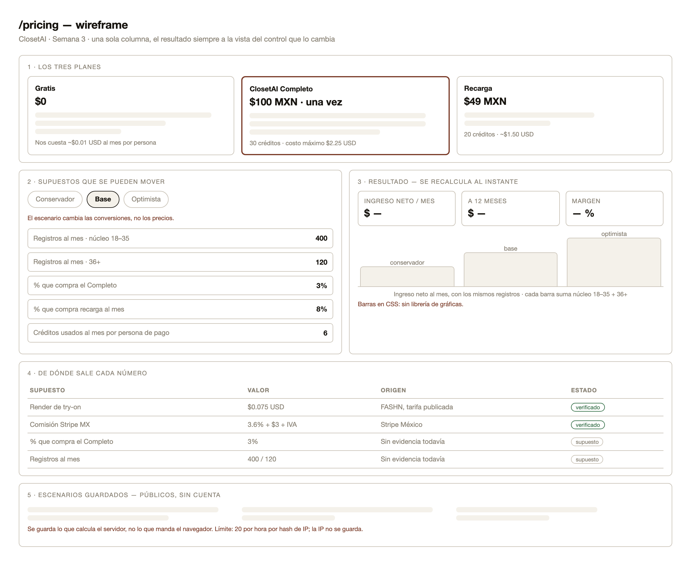
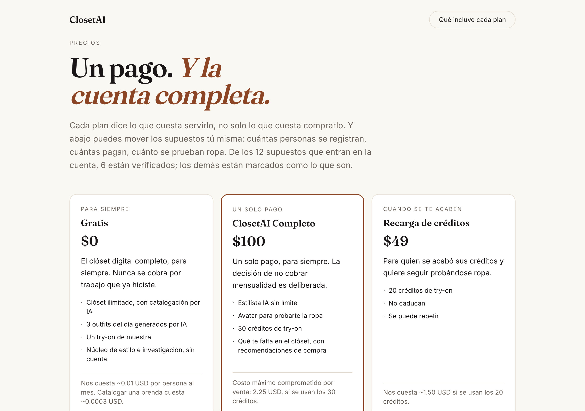
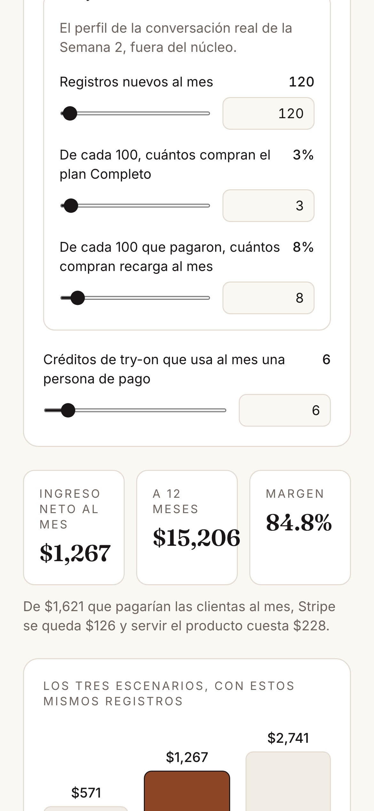
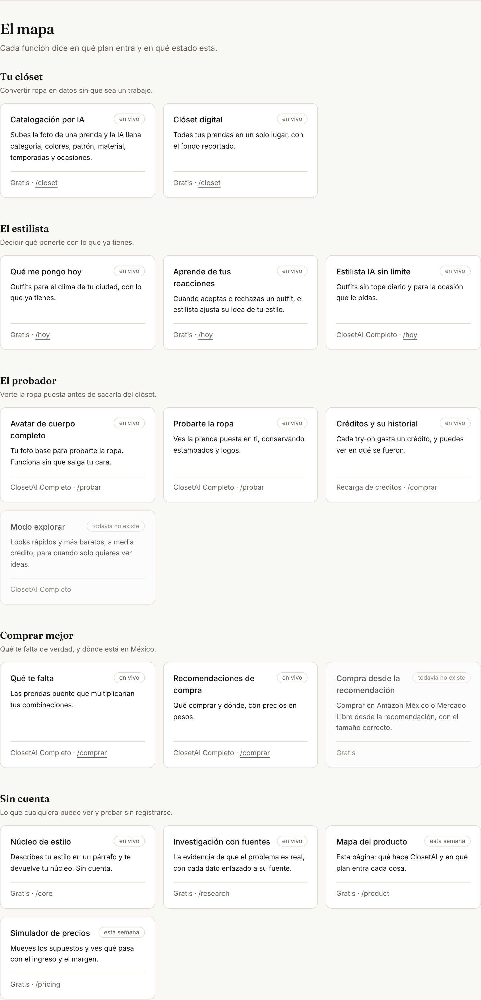
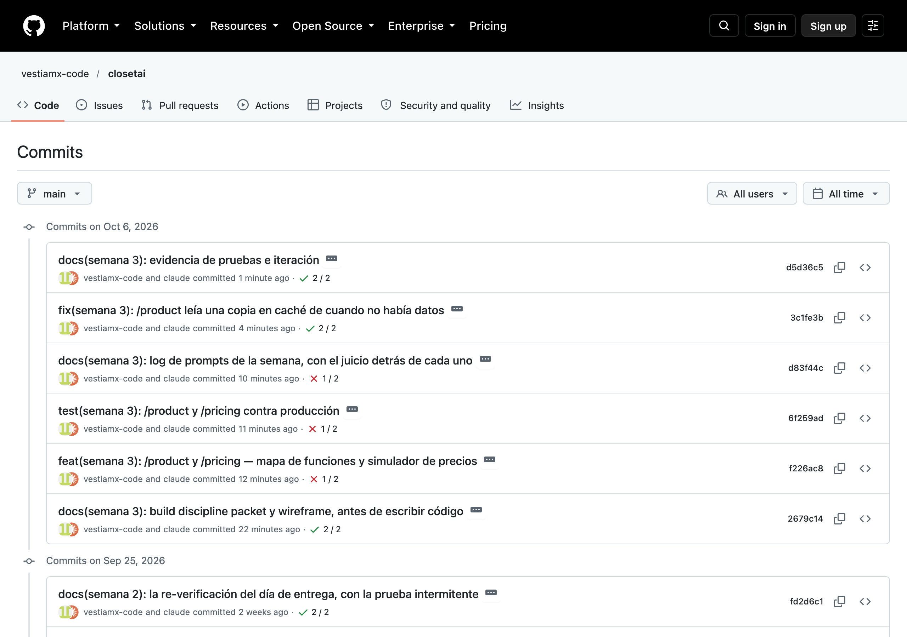
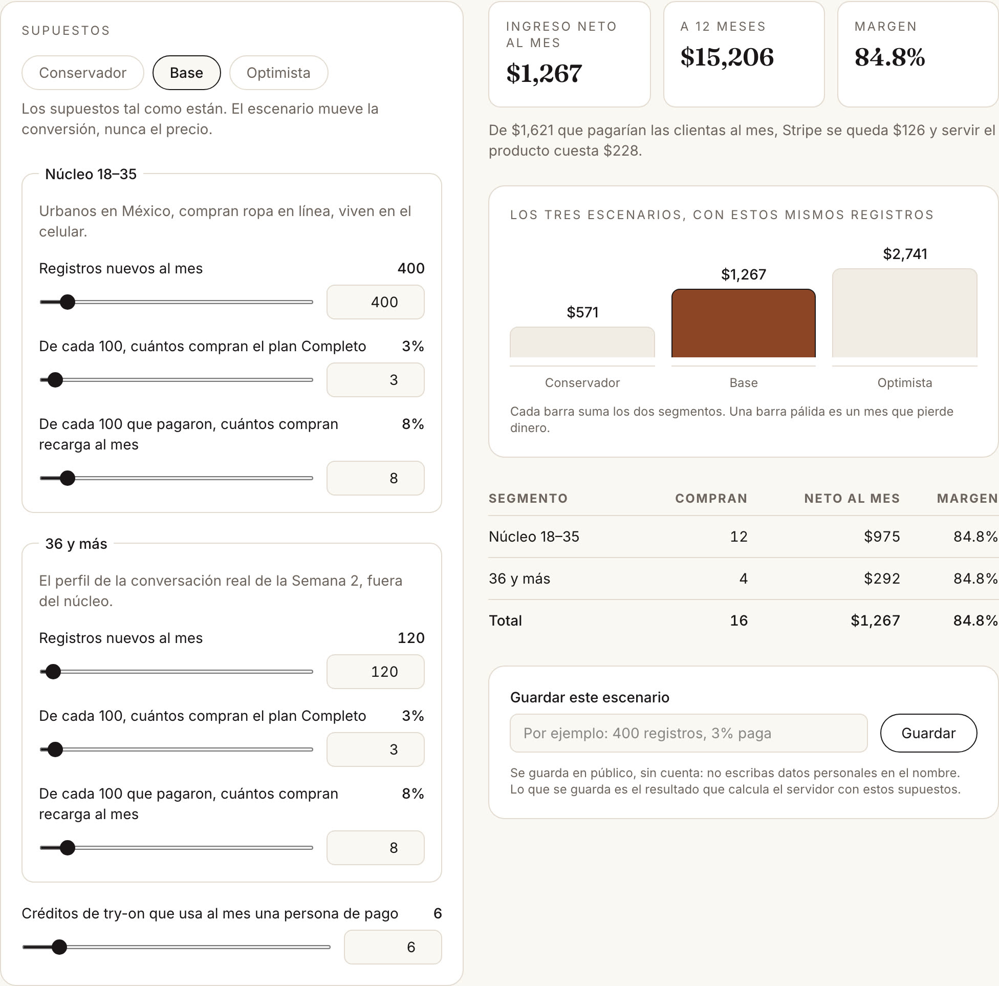
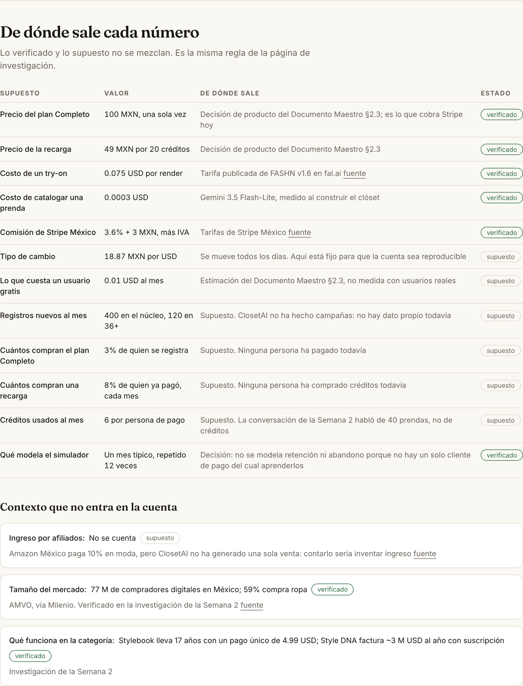
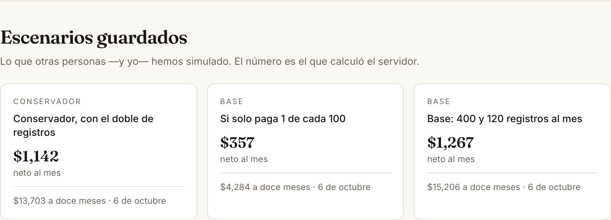
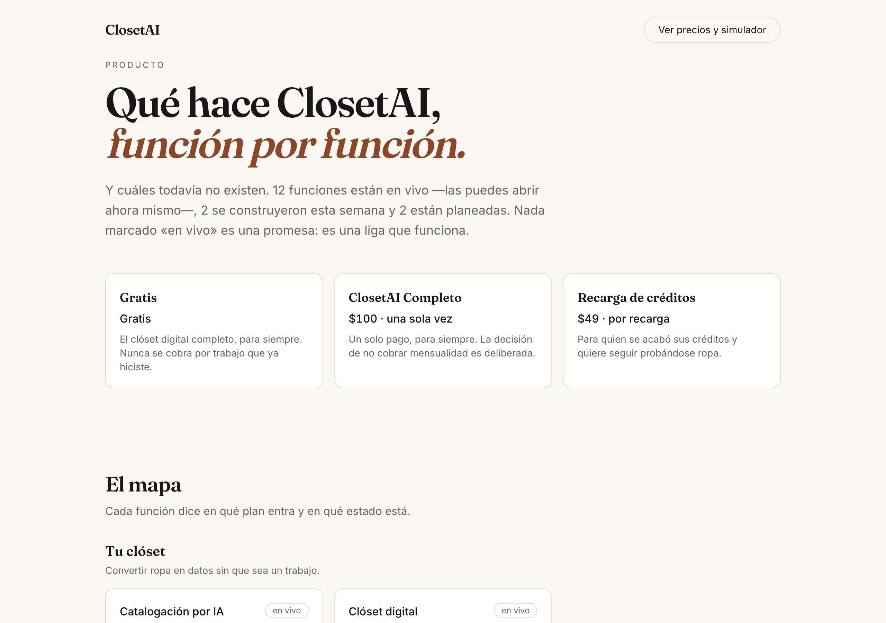

Week 3 · Product architecture + pricing simulator
A public product map for ClosetAI — what works today, what was built this week and what does not exist yet — and a revenue simulator where every assumption says whether it is verified or a guess.
| Category | Pts | Evidence | § |
|---|---|---|---|
| Build discipline before coding | 1.5 | Packet committed at 16:07 (2679c14); first line of code at 16:18 (f226ac8). Public history | 2 |
| UX planning and image-generated mockup | 1.0 | Wireframe with implementation notes, scope cut, and what changed between the wireframe and the build | 3 |
| Product spec and acceptance criteria | 1.0 | 11 requirements, each with a checkable criterion and where it is tested | 4 |
| Architecture and tech stack clarity | 1.0 | Data flow, the double calculation, and why there is no AI on these pages | 5 |
| Working deployed product | 2.0 | closetai.lat/product and /pricing load with no session; 10 of 10 end-to-end tests pass against production | 6, 10 |
| Coding/build evidence | 1.0 | 8 commits (min. 5) · 8 deployments (min. 2) · 6 coding-agent prompts (min. 5) | 6–9 |
| Testing and iteration | 1.0 | 2 pricing tests required, 6 written · 3 software tests required, 5 written · each one watched failing on purpose · 5 defects and corrections documented | 10–11 |
| Human judgment and explanation | 1.0 | Two business decisions made by me before the plan; a privacy bug found in my own database and fixed; decision note, 231 words | 2, 12, 14 |
| Demo clarity | 0.5 | 2:19 walkthrough recorded against production [PENDING: my narration] | 13 |
| Required | Where it is |
|---|---|
| Product feature map | /product — 16 features in 5 groups, each with its plan and its real state |
| 3 pricing tiers | /pricing — Free, Complete (100 MXN once), Top-up (49 MXN / 20 credits) |
| 2 customer segments | Core 18–35 and 36+, calculated separately and summed |
| Revenue calculator | Monthly and twelve-month net, with cost and margin |
| Scenario toggle | Conservative / Base / Optimistic — changes conversion, never price |
| Assumptions table | 15 assumptions, each marked verified (with source and date) or guess |
| Saved pricing scenarios | pricing_scenarios table; the public list shows what the server computed |
| Create /product page · create /pricing page · build calculator inputs · calculate monthly/annual revenue · save scenarios · display saved scenarios | All live, all tested against production |
| 2 pricing logic tests + 3 software tests | 6 and 5 respectively (§10) |
Full text in docs/SEMANA-3-PACKET.md, committed 11 minutes before the first
code commit.
Both are business decisions, so they are mine, and they are written in the commit message:
ClosetAI's price was decided, but nobody could check it. It lived in a private markdown table: no customer could see what each plan includes, and nobody could see whether the price covers what the product costs to serve. And the try-on costs money every time — about 0.075 USD per render. A bad price does not show up on screen; it shows up in the bank account.
Me, deciding with numbers instead of hope. Whoever evaluates ClosetAI, who should see the arithmetic rather than a claim. And the customer, who should see what is free forever and what is not.
Both pages public, the map honest about what does not exist, the calculator recomputing live, the scenarios ordered, every assumption sourced, and saving writing to Supabase — with the arithmetic reproducible from what is printed on the page.
| Left out | Why |
|---|---|
| Charging for new plans | Stripe already charges the Complete plan. Touching real money for a pricing exercise risks real money |
| Subscription as a live plan | Nobody has said they would pay for one |
| Accounts to save scenarios | The page is public, like /research. Saving is protected by a rate limit, not a login |
| A charting library | Three bars in CSS do the comparison and weigh nothing |
| 36-month projection | Twelve months already forces a decision; beyond that is fiction with decimals |
| Churn modelling | With zero paying customers, a retention rate would be a number I invented and then believed |
The wireframe was drawn before the build, and it carries its implementation notes inside the drawing.

/pricing: plans with their cost, movable assumptions,
the result beside them, where each number comes from, and the saved scenarios.

| # | Requirement | Acceptance criterion (checkable) | Status |
|---|---|---|---|
| 1 | Public pages | GET /product and GET /pricing return 200 with no session cookies | ● done |
| 2 | Feature map | Features grouped, each marked live / this week / planned | ● done |
| 3 | 3 plans | Each with what it includes and what it costs us to serve | ● done |
| 4 | 2 segments | Core 18–35 and 36+ calculated separately, plus the total | ● done |
| 5 | Calculator | Sign-ups, both conversion rates and credits used; changing any one recomputes without reloading | ● done |
| 6 | Monthly and annual | Gross, commissions, variable cost, net and margin, per month and over twelve | ● done |
| 7 | Scenario toggle | Optimistic ≥ base ≥ conservative in net income — fixed by a test, not by opinion | ● done |
| 8 | Assumptions table | Each assumption shows value, origin, and whether it is verified (with date) or a guess | ● done |
| 9 | Save scenario | Writes a row to pricing_scenarios with the server's result and appears without reloading | ● done |
| 10 | Saved scenarios | Public list with name, scenario, monthly net and date | ● done |
| 11 | Privacy and limit | The hourly limit stores a salted hash, never the IP; max 20 per hour | ● done |

Browser (/product, /pricing — no session)
│
│ Server Component: reads plans, features and assumptions from Postgres
▼
Next.js 16 (App Router, Vercel)
│
├── /product — feature map, straight from the database
├── /pricing — plans + simulator (client) + saved scenarios
│ │
│ │ The arithmetic lives in src/lib/precios.ts — no React, no network:
│ │ assumptions in, results out. That function is what the logic tests test.
│ │
│ ▼
│ Server Action `guardarEscenario`
│ │ zod · RECALCULATES on the server · salted IP hash · 20/hour
│ ▼
└──> Supabase Postgres
├── pricing_plans (3 rows, public read)
├── pricing_features (16 rows, public read)
├── pricing_assumptions (15 rows, public read)
└── pricing_scenarios (server only — not even public read)
Once in the browser, so the number moves while you move the slider. Once on the server, before saving. If someone edits the JavaScript and sends an income of a million, what gets stored is still the result of those assumptions. The screen asks; the server decides. A test proves it: with zero sign-ups, the saved income is zero no matter what the browser sends.
It is a decision, not an omission. A number that changes every time you ask it cannot be used to set a price, it cannot be reproduced by whoever reads the page, and it would cost money per question. The pricing logic is 190 lines of TypeScript with its own tests.
| Piece | Choice | Why |
|---|---|---|
| Framework | Next.js 16, App Router | Already in use; Server Components read the database with no API in between |
| Arithmetic | Plain TypeScript, one file | Tested in milliseconds; the same function runs in the browser and on the server |
| Chart | CSS flex + height | Three bars do not justify a library |
| Database | Supabase Postgres + RLS | Public read for content, writes only with the service key |
| Validation | zod | Same contract pattern as /core and /research |
| Tests | Vitest + Playwright | Logic in Vitest, the real site in Playwright |
| AI | none | See above |
| Hash | When | Message |
|---|---|---|
| 2679c14 | Oct 6, 16:07 | docs: Build Discipline Packet and wireframe, before writing code |
| f226ac8 | Oct 6, 16:18 | feat: /product and /pricing — feature map and pricing simulator |
| 6f259ad | Oct 6, 16:19 | test: /product and /pricing against production |
| d83f44c | Oct 6, 16:19 | docs: the week's prompt log, with the judgment behind each one |
| 3c1fe3b | Oct 6, 16:25 | fix: /product was serving a cached copy from before the data existed |
| d5d36c5 | Oct 6, 16:28 | docs: test and iteration evidence |
| db9b712 | Oct 6, 16:30 | fix: the free plan read “Gratis / Gratis” |
| 472b4e2 | Oct 6, 17:44 | feat: demo video page at /demo/semana-3 and the approved decision note |

All Production, all Ready, with exact times read from Vercel.
| When | Status | What went out |
|---|---|---|
| Oct 6, 16:07 | ● Ready | The packet and the wireframe |
| Oct 6, 16:18 | ● Ready | /product and /pricing, with the pages showing their “no data” notice until the migration ran |
| Oct 6, 16:19 | ● Ready | The end-to-end tests |
| Oct 6, 16:19 | ● Ready | The prompt log |
| Oct 6, 16:25 | ● Ready | Fix: the cached product map |
| Oct 6, 16:28 | ● Ready | Test and iteration evidence |
| Oct 6, 16:30 | ● Ready | Fix: the duplicated label on the free plan |
| Oct 6, 17:45 | ● Ready | The demo video page and the decision note |
Two migrations, both applied with my explicit permission and both checked against the database rather than against the screen.
| What was checked | Result |
|---|---|
| The SQL pasted into the editor is the one in the repository | sha256 84d7a474…, 14,182 bytes, identical |
pricing_plans | 3 rows |
pricing_features | 16 rows |
pricing_assumptions | 15 rows |
pricing_scenarios readable with the public key | 401 — it is not |
Answering the question “what data does your app ask for, and do you need all of it?” I checked my
own database. Week 1's table, core_outputs, had been left with public read and a
comment claiming the column with people's text “is protected in the view”. It was not true: with
the public key — the one that travels inside every browser — the fifteen texts could be read in
full. I proved it by making that request.
| Check | Before | After |
|---|---|---|
core_outputs with the public key | 200, 15 texts readable | 401 |
core_outputs with the service key (what the page uses) | 200 | 200 — the page is unaffected |
| IP addresses stored for the hourly limits | Stored in full, with no deletion date | Salted hash, in /core, /research and /pricing |
| Privacy notice | Said nothing about either | Says both, at closetai.lat/privacidad |
The rule this leaves written in the migration: a table is opened to the public key only if every one of its columns is public. If one is not, none of them are.
Full log in docs/evidencia/PROMPT_LOG.md. What matters in each one is not
the instruction, it is the judgment attached to it.
1 · Two decisions before the plan
“This is what we have to do this week. Do it.”
Before a single line: two questions back, because they were business decisions, not the agent's. Which three plans, and which two segments.
MY JUDGMENT. The subscription stays out of the page and inside the simulator.
2 · The packet, before the code
“Write the Build Discipline Packet for /product and /pricing, with checkable acceptance criteria, and commit it before touching code.”
2679c14 at 16:07; first code at 16:18.
MY JUDGMENT. No churn modelling. It would make every number bigger and none of them truer.
3 · The arithmetic, alone and testable
“The maths goes in src/lib/precios.ts: a pure function, no React, no network, no AI. The browser and the server call the same one.”
190 lines, every constant with its row in pricing_assumptions.
MY JUDGMENT. No AI here. A number that changes every time you ask it is useless for a price.
4 · The pricing tests, watched failing
“Two logic tests: that a 100-peso sale keeps its margin even if all 30 credits are burned, and that optimistic ≥ base ≥ conservative. Break the code on purpose before trusting them.”
6 tests. Sabotage: render cost 0.075 → 0.30 turns the first red; optimistic factor 2 → 0.2 turns the second red.
MY JUDGMENT. One of the tests I asked for was wrong, and the code was right. I fixed the claim, not the code.
5 · The browser does not get to decide what is stored
“When a scenario is saved, the server recalculates and stores its own result. And the hourly limit must not store the IP.”
Server Action with zod and a second calculation; src/lib/ip.ts with a
salted hash, shared with /core and /research.
MY JUDGMENT. This came out of a question about my own data, not out of the assignment.
6 · Test against the real site
“Three software tests against production: that it loads, that it recomputes, and that what is saved is the server's number. And that /product does not mark everything as live.”
5 tests in e2e/precios.spec.ts, 10 of 10 across phone and desktop.
MY JUDGMENT. The map test requires features marked as not built. A map where everything is finished is advertising.
src/lib/precios.test.ts)| # | What it asserts | Result |
|---|---|---|
| 1 | A 100-peso sale survives the worst case: 7.66 to Stripe, 42.46 of credits, 49.89 net per sale, margin ≥ 50% | ● pass |
| 2 | Optimistic ≥ base ≥ conservative in net income, and the plan price does not change between scenarios | ● pass |
| 3 | With nobody paying: income 0, commissions 0, and the month costs exactly what the free users cost | ● pass |
| 4 | The year is twelve of the same typical month | ● pass |
| 5 | The optimistic scenario cannot convert more than 100% of sign-ups | ● pass |
| 6 | The total is the sum of the two segments, not a separate calculation | ● pass |
e2e/precios.spec.ts)| # | What it asserts | Result |
|---|---|---|
| 1 | /pricing loads with no session, with 3 plans, both segments, and an assumptions table that shows both verified and guessed | ● pass |
| 2 | Raising an assumption raises the income; conservative lowers it; optimistic raises it again | ● pass |
| 3 | What is stored matches the screen, and ip_hash is 64 hex characters | ● pass |
| 4 | With zero sign-ups the stored income is zero: the browser does not dictate the result | ● pass |
| 5 | /product does not mark everything live, and every route it marks live returns 200 | ● pass |
10 of 10 across both profiles — phone and desktop — on October 6, 2026.
A green test proves nothing until you have seen it go red. Raising the try-on cost from 0.075 to
0.30 USD turns test 1 red with expected 169.83 to be close to 42.46. Dropping the
optimistic factor from 2 to 0.2 turns test 2 red. Both go green again on revert.
56 unit tests pass (6 new). End-to-end against production: 77 pass, 3 skipped by design, and 1 red — the stylist test that builds three outfits. Run alone, it passes. It is the same intermittency recorded since September 18, still without an identified cause. It is written here rather than hidden.
| What was found | What changed |
|---|---|
| My own plan asked for a false test: “0% conversion ⇒ income 0 and cost 0” | Free users cost ~0.01 USD a month, so a month with no sales is −98 pesos, not zero. The test now fixes the real model |
| A test I asked for was wrong: it claimed income per buyer is identical across scenarios | The scenario also changes how many top-ups each buyer makes. The claim was corrected; the code was right |
/product kept showing “not available” with the tables already created and verified | It had been prerendered before the migration with a 5-minute cache. Now it reads on every visit, like the other public pages |
| The free plan card read “Gratis / Gratis” | The price now shows “$0 · para siempre” |
Asking what data ClosetAI collects: public read on core_outputs, and full IP addresses stored with no deletion date | Migration 009, a shared salted-hash helper, and a privacy notice that now says both |
This is the part I did not plan for: the tool I built to defend my price is the one that questioned it.

| Scenario (520 sign-ups a month) | Net per month | Over twelve months |
|---|---|---|
| Conservative — half the conversion | $571 MXN | $6,852 MXN |
| Base — my assumptions as written | $1,267 MXN | $15,206 MXN |
| Optimistic — double the conversion | $2,741 MXN | $32,892 MXN |
| If only 1 in 100 pays | $357 MXN | $4,284 MXN |
Even tripling sign-ups to 1,200 a month in the core segment, the base scenario reaches $3,217 a month and the optimistic one $6,958. The margin is healthy — around 85% — because the product is cheap to serve. The problem is not the margin. It is that one payment of 100 pesos, paid once per customer forever, does not add up to a business at this scale.
What I am not doing with that: switching to a subscription this week because a spreadsheet told me to. The simulator uses guessed conversion rates — they are labelled as guesses on the page — so what it proves is not “subscriptions win”. It proves that the question is worth real evidence, and that evidence is a conversation with someone aged 18 to 35, which is the next one.


2:19, recorded against the live site, hosted on the product's own domain: closetai.lat/demo/semana-3 [PENDING: my narration]
In order: the product map with no account; the sixteen features and their real state; the three plans with their cost; the simulator and its two segments; an assumption moved live and the income moving with it; the three scenarios compared; the assumptions table; saving a scenario; the public list; and the commit history in GitHub.

closetai.lat/product.This week I had to put a price on my product, and the honest answer was that I don't know yet what people will pay.
So I made a decision: the three plans on the page are the ones I already decided — free, one payment of 100 pesos, and a credit top-up — and the subscription stays out. It lives inside the simulator as a scenario instead. The evidence cuts both ways: Stylebook has survived seventeen years on a one-time price, Style DNA makes about three million dollars a year on subscriptions, and the only real person I interviewed already pays monthly for Disney+. Putting a price on the page is a claim. Putting it in the simulator is a question, and I only have a question.
I also rejected modelling customer retention. It would make every number bigger, and I have zero paying customers to learn a real rate from. The simulator models one typical month and says so on the page.
The number I did not expect: with my base assumptions, 520 sign-ups a month and 3% paying, ClosetAI makes 1,267 pesos a month. If only 1 in 100 pays, it's 357. That is what one payment of 100 pesos really means, and it is why the subscription question matters more than I thought.
Finally, I corrected myself. Asking what data my app collects uncovered that anyone could read what people wrote on my style page, and that I was storing full IP addresses. Both are fixed.
231 words · approved by Tamara Muñoz Delgadillo, October 6, 2026
| Gate | Required | Evidence |
|---|---|---|
| 1 — Plan | Build Discipline Packet complete before coding | §2 · 2679c14, 11 minutes before the first code commit |
| 2 — Build | Code, commits and deploys completed | §6 · 8 commits · §7 · 8 production deployments |
| 3 — Test | Tests documented, bug fixed, redeploy completed | §10–11 · 5 defects and corrections, each fixed and redeployed |
| 4 — Explain | Demo and human decision note submitted | §13 · 2:19 video · §14 · 231 words |